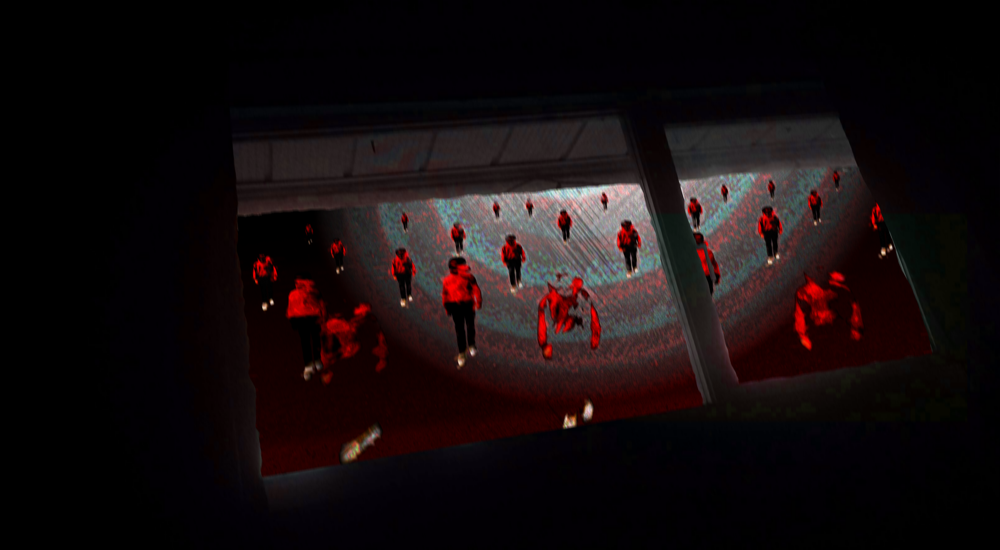

SCP NUMBER ONE. Class: 3

Lucas-1a nicked named "Bill" is class 4 entity Lucas. People known to approach Bill have been met with confusion and fear at his appearence. Bill has been contained but is constantly trying to breach out, he is assisted in this task with his teleporting skill, which has puzzled staff at seeing him suddenly dissapear; though recent studies have been contridicting this as it showed he doesn't actually leave the room when he vanishes. It is now believed that Bill doesn't actually teleport. but instead hides in the heavily forested area that is in his enclosure, and it is also believe that most personnel watching him have visibility issues. Lucas-1a has a unique ability in which he can create [REDACTED]. Opon creating it, multiple Lucas-1b's will flood out of [REDACTED] and begin [DATA EXPUNGED]. The only known method of reversing this effect is shaking lucas-1a's hand and telling him "you are hired!", once this happens he will close [REDACTED] and begin working at the nearest establisment until he is kicked out, after learning this he was granted special containment procedures which included having a business man in his containment chamber at all times.
Staff: What happened when you saw him?
Mitchell: I ran away.
Staff: What happened next?
Mitchell: Ahh. He ran away.
Staff: is that all?
Mitchell: Yeah.
 Event NLE-2 is an event in which Lucas-1a opened [REDACTED] and proceeded to [REDACTED]. This event left millions in fear and paranoia for the rest of their lives. It is said that ever since this happened; multiple occurences of [REDACTED] showing up all around the globe. The event was stopped once Lucas-1a's hand was shook and he was told he was hired.